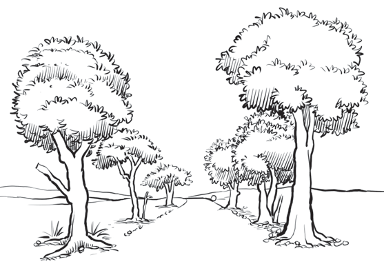

Additionally, Figure 22 shows a balanced scenario, where the artist places objects such as trees, grass, and mountains on both sides, creating equal visual weight on the left and right sides of the image.

Figure 22: An example of an image showing a balanced scenario
Activity 13
Make a drawing of anything found at school or home to demonstrate:
(a)
A balanced scenario.
(b)
The use of shadows.
Colour
Colour enhances beauty and describes objects with a great sense of realism and clarity. It is also used to differentiate one object from another in an image. For example, the green colour often represents plants, the blue colour indicates the ocean or mountains seen from a distance, and the brown colour represents the earth. Figure 23 shows how colour portrays realism in the painting and distinguishes the objects, such as mountains, plants, and the land.
Additionally, Figure 22 presents a balanced scenario, where the artist places objects such as trees, grass, and mountains on both sides, creating equal visual weight on the left and right sides of the image.Trees stand on both sides of a road, making the picture look balanced and even.Figure 22: An example of an image showing a balanced scenarioActivity 13Make a drawing of anything found at school or home to demonstrate:(a) A balanced scenario.(b) The use of shadows.ColourColour enhances beauty and describes objects with a great sense of realism and clarity.It is also used to differentiate one object from another in an image.For example, the green colour often represents plants, the blue colour indicates the ocean or mountains seen from a distance, and the brown colour represents the earth.Figure 23 presents how colour portrays realism in the painting and distinguishes the objects, such as mountains, plants, and the land.